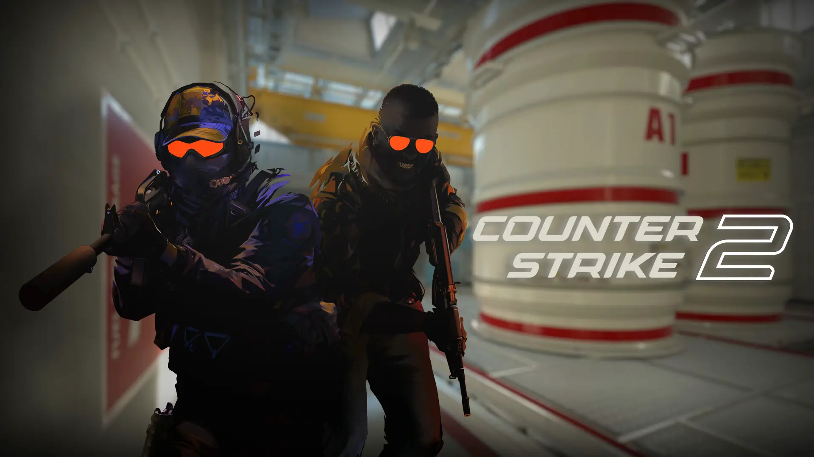
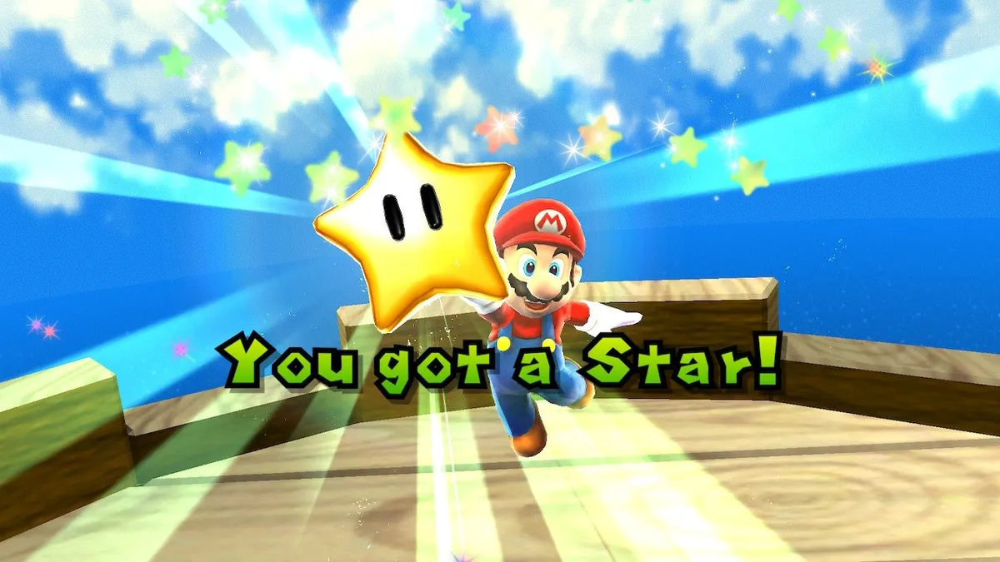

The ESports King is Back and better than ever

On September 27th, 2023, Valve officially released their long awaited sequel/remaster/remake of their
most popular game to date, Counter Strike: Global Offensive (CSGO). CSGO initially came out in
August of 2012 and was still popular and played professionally up until the servers were changed over to CS2. I think this
game is fun but it is hard sometimes.
Jack's Top 5 Favorite Games
Not in any particular order

- Grand Theft Auto 5
- Super Mario Galaxy 2
- Super Mario Galaxy
- Fallout 4
- Lego Star Wars: The Complete Saga
Most of these are my favorites because of just how much I have played them. Some of them aren't the most amazing games
in the world, but they all have a special place in my heart. Fun fact, GTA 5 the game that I have the most play
time in out of any other game (about 1000 hours). Lego Star Wars: The Complete Saga was probably my first
favorite game, just because the only thing going on in my life was Legos and Star Wars, which made that my favorite.